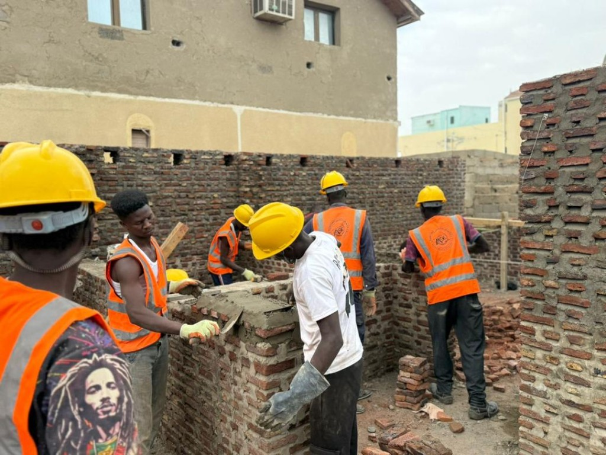
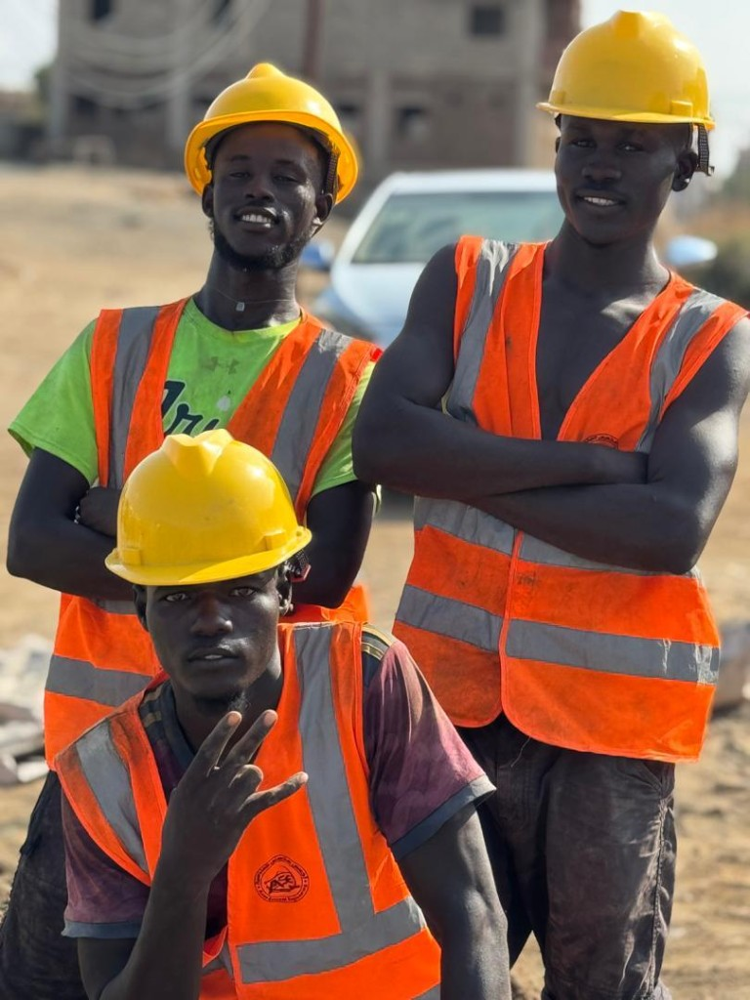
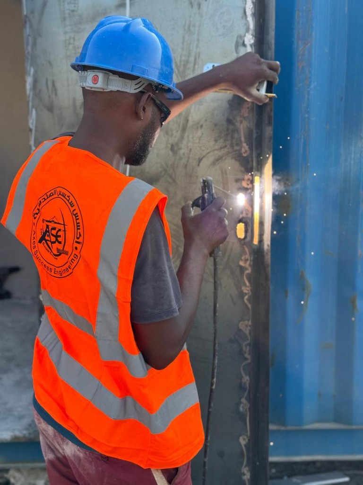
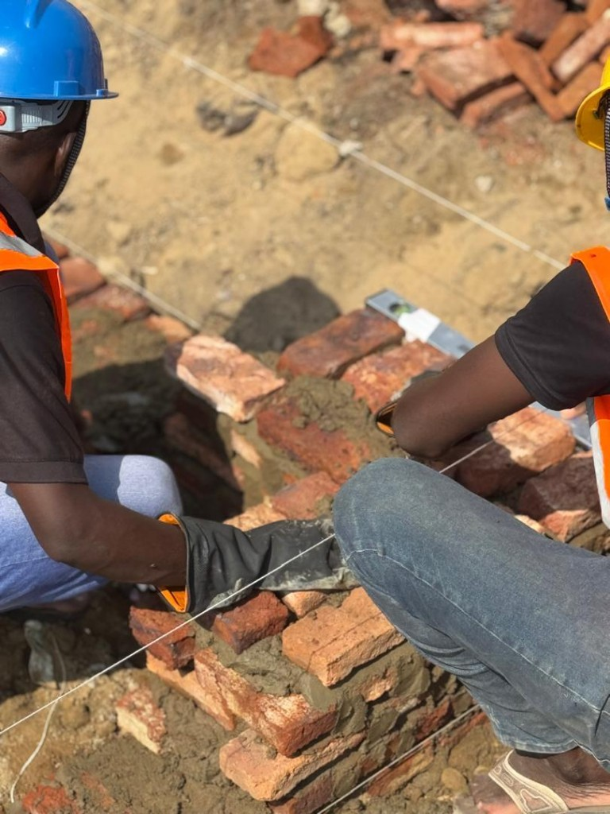
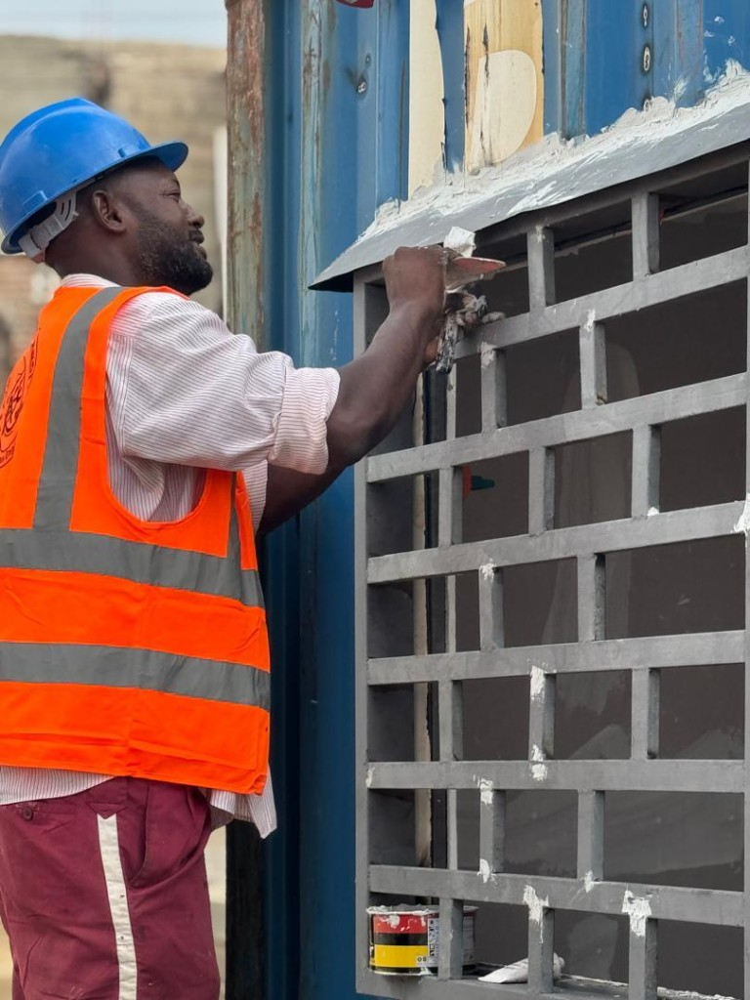
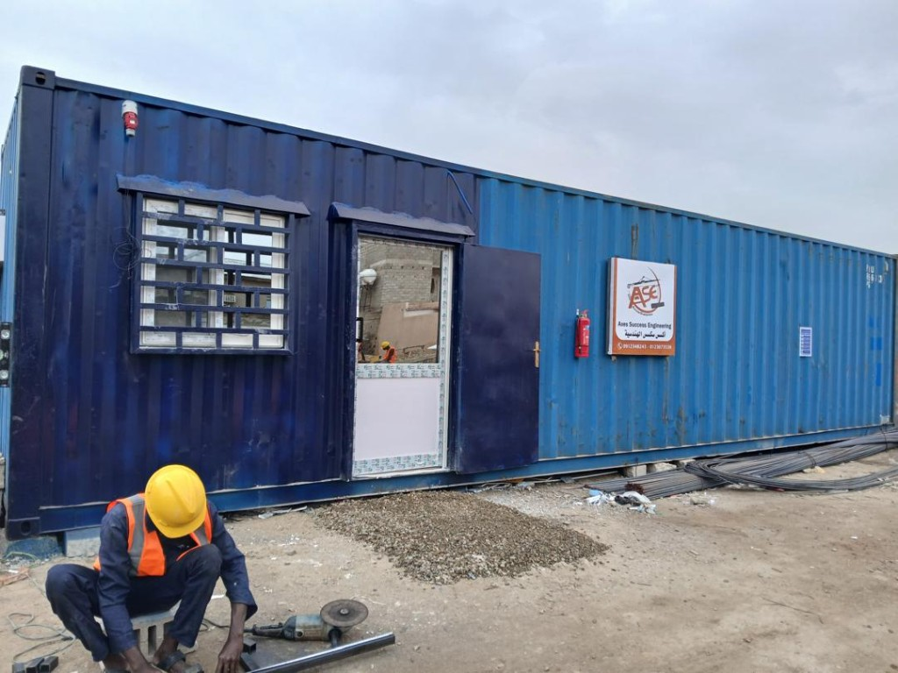
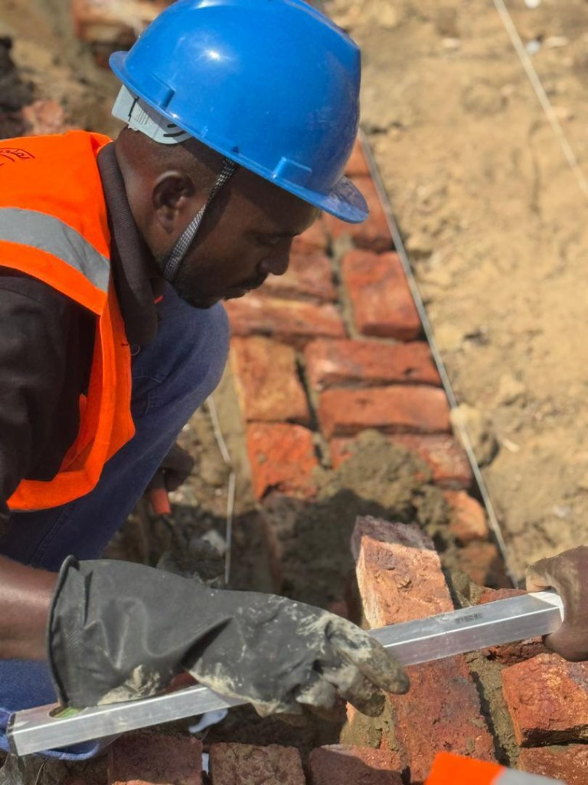
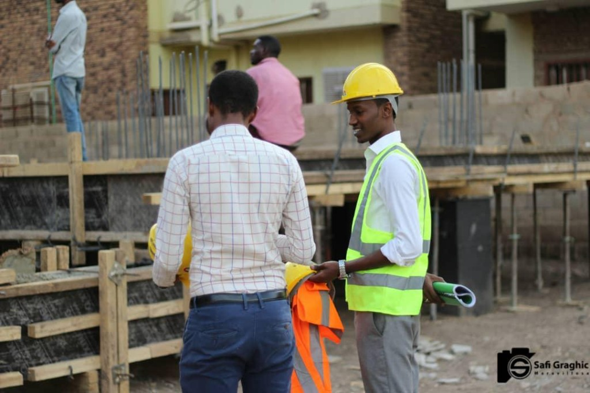

السلامة أولًا
تنظيم الموقع ومتابعة ضوابط السلامة أثناء التنفيذ.
مبادئ توجه قرارات التنفيذ في الموقع.
نربط التخطيط والمتابعة في الموقع بالاهتمام بجودة التنفيذ وسلامة فرق العمل.
تنظيم الموقع ومتابعة ضوابط السلامة أثناء التنفيذ.
مراجعة التفاصيل والمواد خلال مراحل العمل.
التخطيط لاستخدام الموارد بعناية وتقليل الهدر.
مراعاة أثر الأعمال على الموقع والمحيط.
خوذات وعواكس عاكسة وتنظيم واضح للموقع — التزام يومي أثناء التنفيذ.
السترات العاكسة جزء أساسي من ظهور الفريق في الموقع وزيادة السلامة.
الخوذات والقفازات والنظارات عند الحاجة ضمن ضوابط العمل اليومية.
تنسيق المهام بين الفرق يحافظ على السلامة وجودة التنفيذ معًا.







يوفر المكتب المتحرك مساحة متابعة قريبة من مراحل التنفيذ، مع مهندس للمراقبة على مدار 24 ساعة.

الجودة والسلامة تُتابع ميدانيًا: مراجعة المخططات، الوقوف على الأنشطة، والتأكد من الالتزام بمعايير التنفيذ يومًا بيوم.